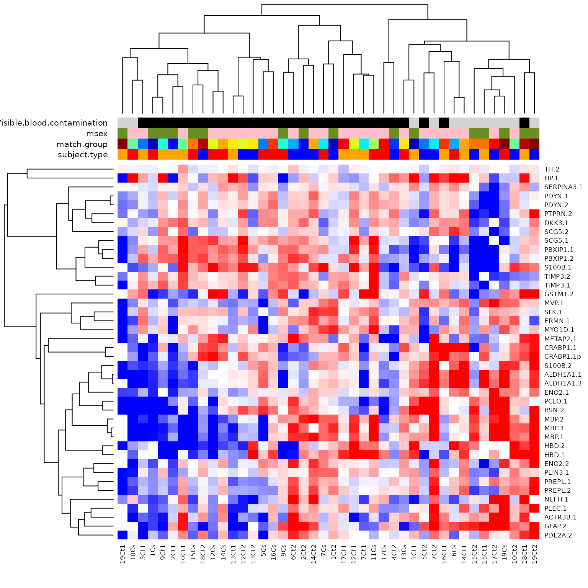
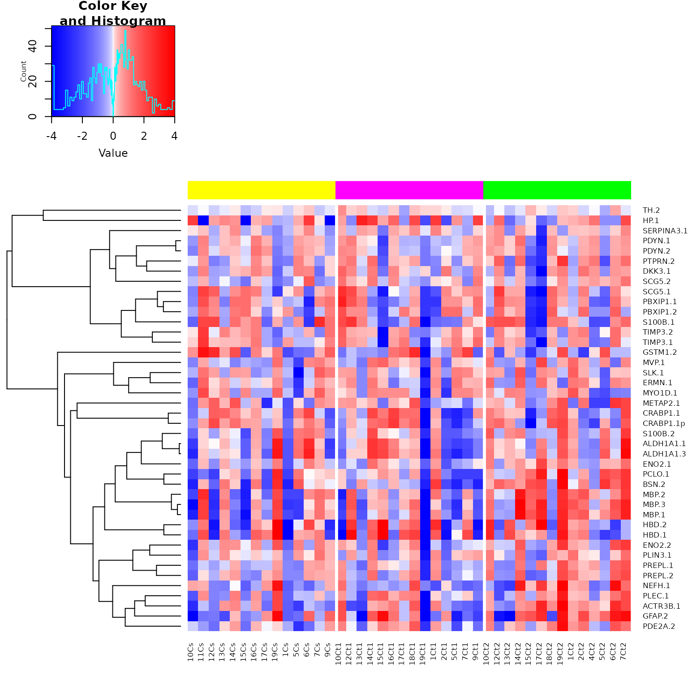

heatmap_examples.Rmd
data(srm_msnset)
# match.group, subject.type, msex, Visible blood contamination
columnCol <- pData(msnset)[,c("subject.type", "match.group", "msex",
"Visible blood contamination")]
columnCol <- as.data.frame(lapply(columnCol, as.factor))
columnCol$subject.type <-
c('red','orange','blue')[columnCol$subject.type]
columnCol$match.group <-
jet.colors(nlevels(columnCol$match.group))[columnCol$match.group]
columnCol$msex <-
c('pink','olivedrab')[columnCol$msex]
columnCol$Visible.blood.contamination <-
c('black','lightgrey')[columnCol$Visible.blood.contamination]
heatmap.plus.2(exprs(msnset),
hclustfun = function(x, ...) hclust(x, method="average", ...),
dist = function(x, ...) dist(x, method="pearson", ...),
propColSide=0.1,
scale="none",
ColSideColors=as.matrix(columnCol),
breaks=c(-4,seq(-2,+2,length=100),+4),
col=gplots::bluered(102-1)
)
# power scaled breaks
pwr = 2
lim = 4
breaks = lim * abs(seq(-1,+1,length=100))^pwr * sign(seq(-1,+1,length=100))
msnset <- msnset[,order(msnset$subject.type)]
ColSideColors <- c("yellow","magenta","green")[as.numeric(
factor(msnset$subject.type, levels=c("case","control.1","control.2"))
)]
library(gplots)##
## Attaching package: 'gplots'## The following object is masked from 'package:S4Vectors':
##
## space## The following object is masked from 'package:stats':
##
## lowess
heatmap.2(exprs(msnset),
Colv=FALSE,
colsep = cumsum(table(msnset$subject.type)),
sepwidth=c(0.2,0.2),
dendrogram = "row",
hclustfun = function(x, ...) hclust(x, method="average", ...),
dist = function(x, ...) dist(x, method="pearson", ...),
trace="none",
ColSideColors=ColSideColors,
breaks=breaks,
col=bluered(length(breaks)-1))